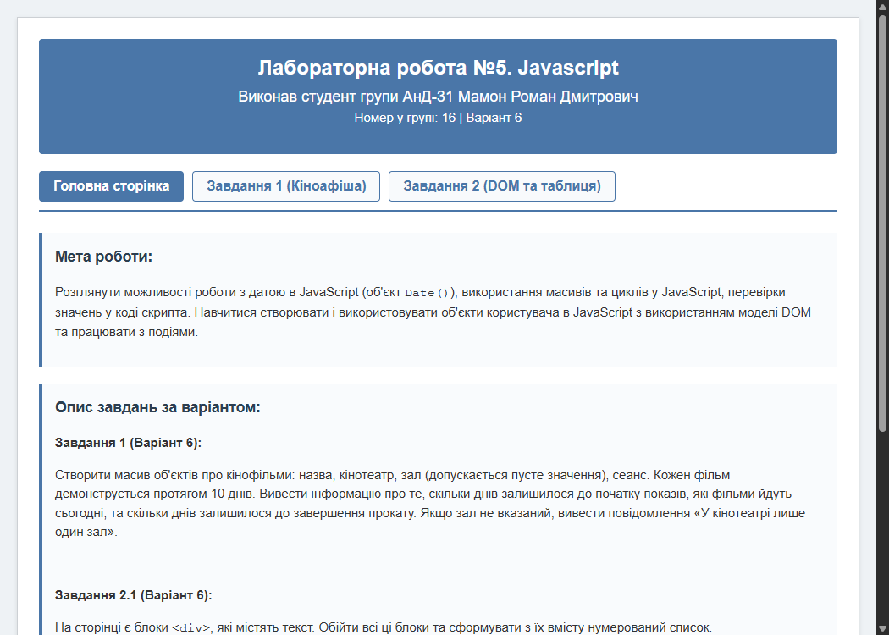
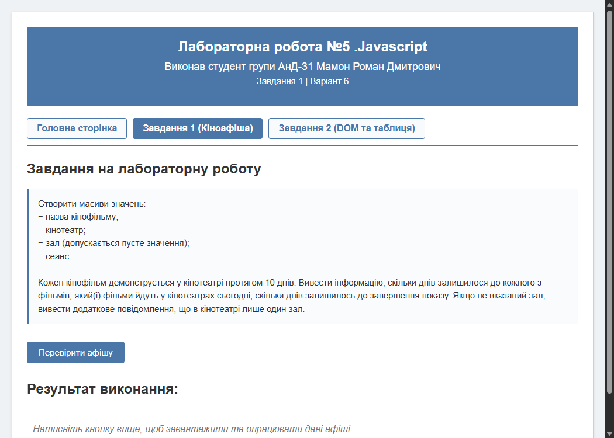
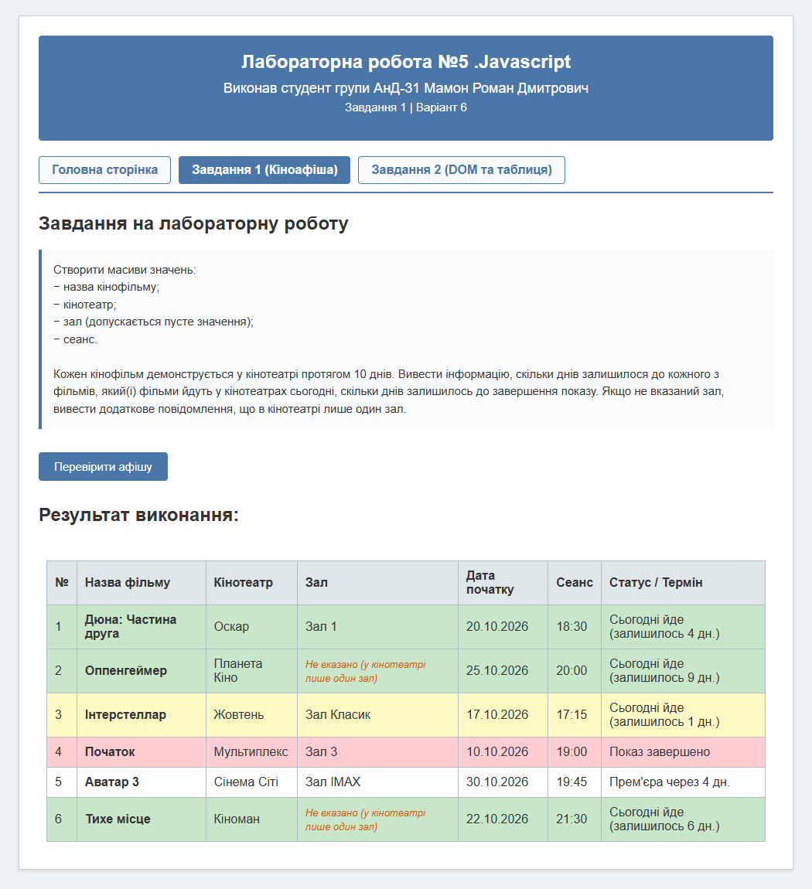
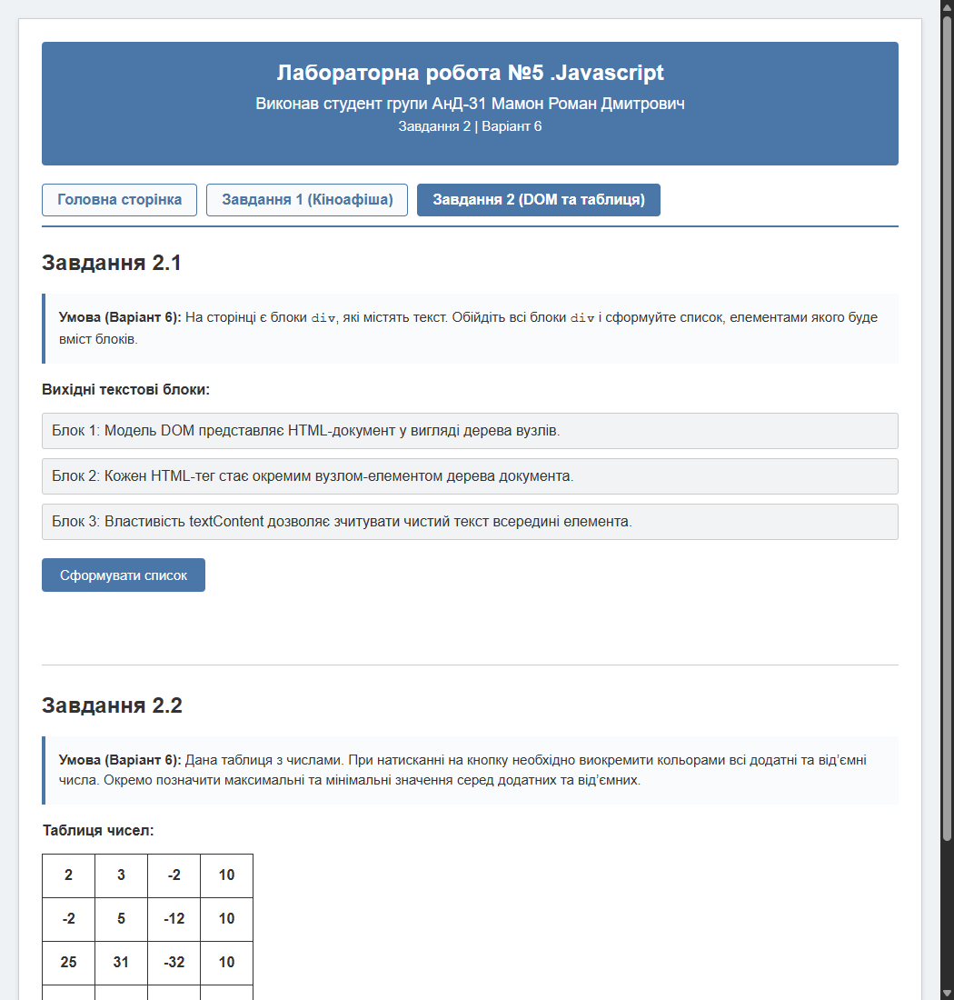
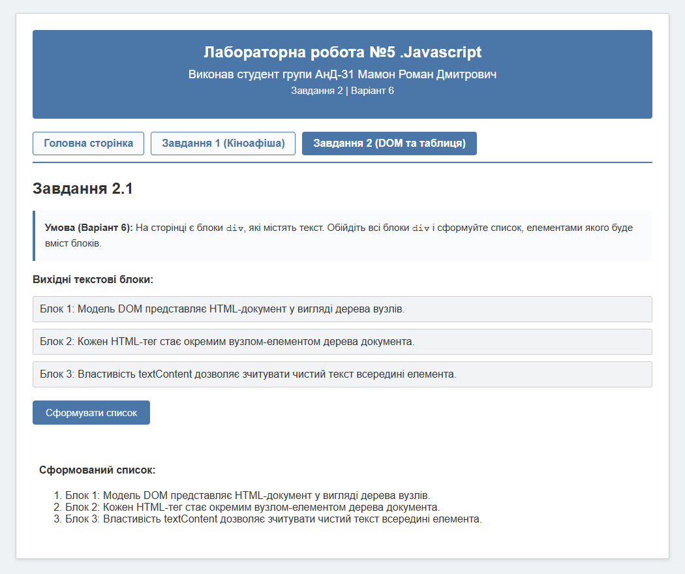
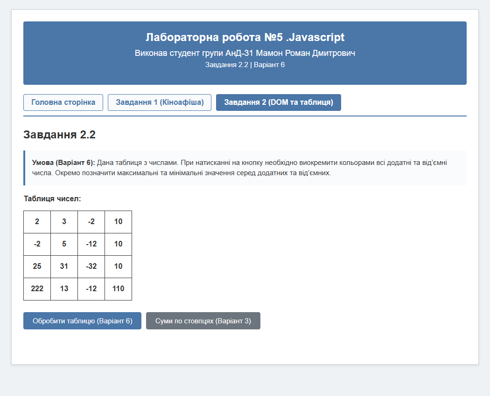
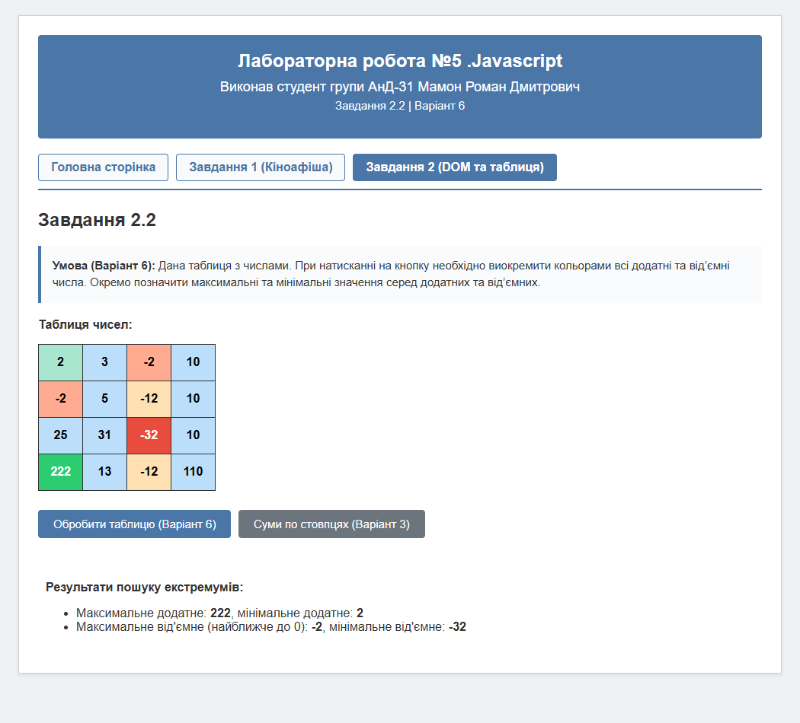
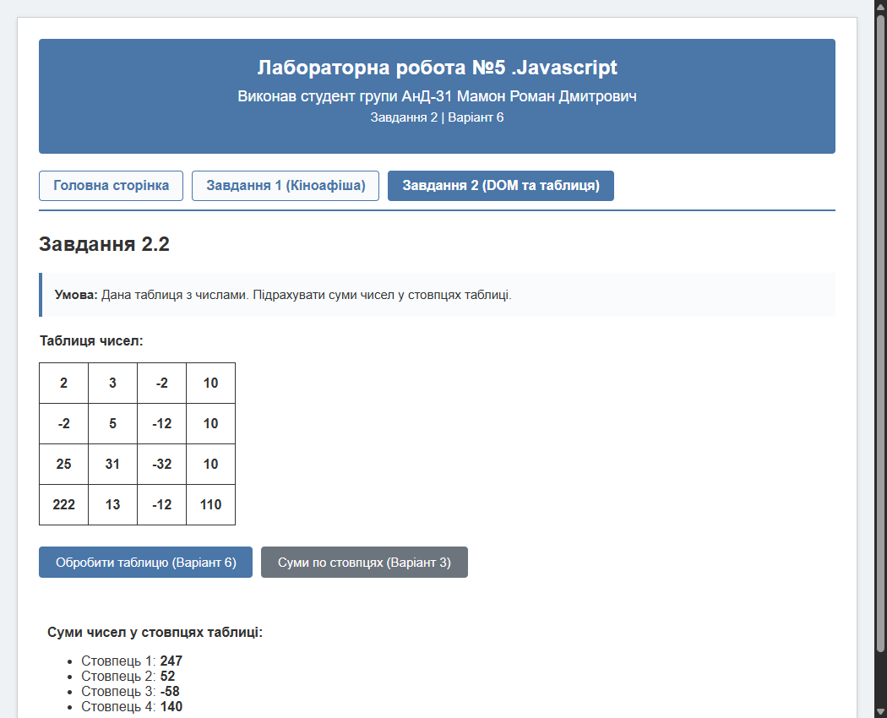

КИЇВСЬКИЙ НАЦІОНАЛЬНИЙ УНІВЕРСИТЕТ
ІМЕНІ ТАРАСА ШЕВЧЕНКА
ФАКУЛЬТЕТ ІНФОРМАЦІЙНИХ ТЕХНОЛОГІЙ
КАФЕДРА ІНТЕЛЕКТУАЛЬНИХ ТЕХНОЛОГІЙ
Основи мови JavaScript: робота з об'єктом Date, масивами, циклами, об'єктами користувача, моделлю DOM та подіями.
Розглянути можливості роботи з датою в JavaScript (об'єкт Date()), використання масивів та циклів у JavaScript, перевірки значень у коді скрипта. Навчитися створювати і використовувати об'єкти користувача в JavaScript з використанням моделі DOM та працювати з подіями.
Необхідно розробити та протестувати інтерактивний веб-застосунок на основі мови JavaScript за закріпленим варіантом (номер у групі 16, варіант індивідуального завдання 6):
1. Робота з масивами об'єктів та об'єктом Date (Завдання 1, Варіант 6):
2. Маніпуляція вузлами DOM-дерева (Завдання 2.1, Варіант 6):
<div>, які містять текстову інформацію.<ol>), елементами якого є текстовий вміст блоків.3. Обробка числової матриці та динамічна зміна стилів (Завдання 2.2, Варіант 6):
Веб-застосунок організовано за модульною структурою, що складається з окремих сторінок, зв'язаних єдиною навігаційною панеллю:
index.html — головна сторінка з описом лабораторної роботи, персональними даними студента та картою завдань;task1.html — сторінка виконання Завдання 1 (кіноафіша);task2.html — сторінка виконання Завдання 2 (робота з DOM-вузлами та матрицею чисел);CSS/style.css — єдина таблиця стилів інтерфейсу, таблиць, кнопок та адаптивних блоків;JS/task1.js та JS/task2.js — окремі скрипти логіки виконання завдань.

Для збереження вихідних даних створено масив arrMovies, елементами якого є об'єкти з полями Name, Cinema, Hall, Data, Time. Для тестування граничних умов у частині об'єктів поле Hall залишено порожнім.
Для визначення часової різниці реалізовано функцію ras_Diff_Days(text), яка парсить рядок формату DD.MM.YYYY, створює екземпляр Date, обчислює різницю у мілісекундах відносно поточної дати (new Date()) та переводить її у кількість повних діб за допомогою формули: Math.floor(timeDiff / (1000 * 3600 * 24)).
Функція vivod() ітерує масив через forEach та перевіряє статус прокату: фільми, прем'єра яких ще не відбулася (білий фон), фільми в прокаті (зелений колір), фільми, до закінчення показу яких залишилося ≤ 2 днів (попереджувальний жовтий колір), та завершені покази (червоний колір). Якщо Hall == "", до стовпця виводиться спеціальне повідомлення: «Не вказано (у кінотеатрі лише один зал)».

У Завданні 2.1 продемонстровано роботу з об'єктною моделлю документа (Document Object Model). На сторінці розміщено блоки <div class="source-block">, кожен з яких містить окреме текстове твердження про будову DOM-дерева.
Функція div_to_list() здійснює вибірку колекції вузлів за селектором document.getElementsByClassName("source-block"), обходить знайдений масив у циклі for, зчитує чистий текст через властивість textContent та генерує HTML-розмітку нумерованого списку <ol>, яка потім записується у контейнер результату за допомогою innerHTML.


У Завданні 2.2 реалізовано алгоритм парсингу HTML-таблиці чисел розміром 4х4 у числовий двовимірний масив за допомогою функції generate_arr(). Зчитування здійснюється через доступ до колекцій table.rows[i].cells[j] та перетворення рядків на числа функцією parseFloat().
Функція table_obrab() за два проходи вирішує поставлену задачу:
maxPos, minPos) та від'ємних чисел (maxNeg — найближче до 0, minNeg — найменше значення);cell.style.backgroundColor та cell.style.color кожної клітинки. Додатні числа фарбуються у світло-блакитний колір (#bbdefb), з акцентом на максимум (яскраво-зелений #2ecc71) та мінімум (м'ятний #a8e6cf). Від'ємні числа фарбуються у світло-оранжевий (#ffe0b2), з виділенням мінімального (червоний #e74c3c) та максимального (кораловий #ffab91).

Як додатковий аналітичний функціонал реалізовано функцію col_sums(), яка здійснює математичний підсумок числових значень за вертикальними стовпцями матриці. Результати обчислень виводяться у вигляді структурованого маркованого списку.

У ході виконання лабораторної роботи №5 було успішно освоєно базові та поглиблені принципи програмування на стороні клієнта мовою JavaScript, роботу з об'єктною моделлю документа (DOM) та обробку подій користувача.
Під час виконання Завдання 1 опрацьовано механізми маніпуляції з об'єктом Date(): виконано коректне перетворення текстових форматів дат на об'єкти часу, розрахунок інтервалів у мілісекундах та їх конвертацію в календарні дні. Засвоєно структурування комплексних сутностей через масиви об'єктів, методи ітерації (forEach), перевірку граничних і порожніх значень та динамічну генерацію табличних структур.
У Завданні 2.1 освоєно техніку обходу вузлів HTML-документа за допомогою інтерфейсу DOM (getElementsByClassName), безпечне вилучення текстового вмісту через властивість textContent та конструювання впорядкованих списків.
У Завданні 2.2 закріплено алгоритми обробки двовимірних матриць у JavaScript: вилучення числових даних із чарунок таблиці, пошук екстремумів серед множин додатних і від'ємних чисел, а також інтерактивне керування візуальним оформленням сторінки через модифікацію інлайн-стилів елементів (style.backgroundColor, style.color). Додатково розроблено алгоритм вертикального підсумовування елементів по стовпцях.
Усі розроблені модулі протестовано у сучасному веб-браузері. Код написано відповідно до стандартів ES6+, структуровано за модульним принципом із розділенням розмітки, стилів та логіки, що забезпечує високу підтримуваність та надійність веб-застосунку.